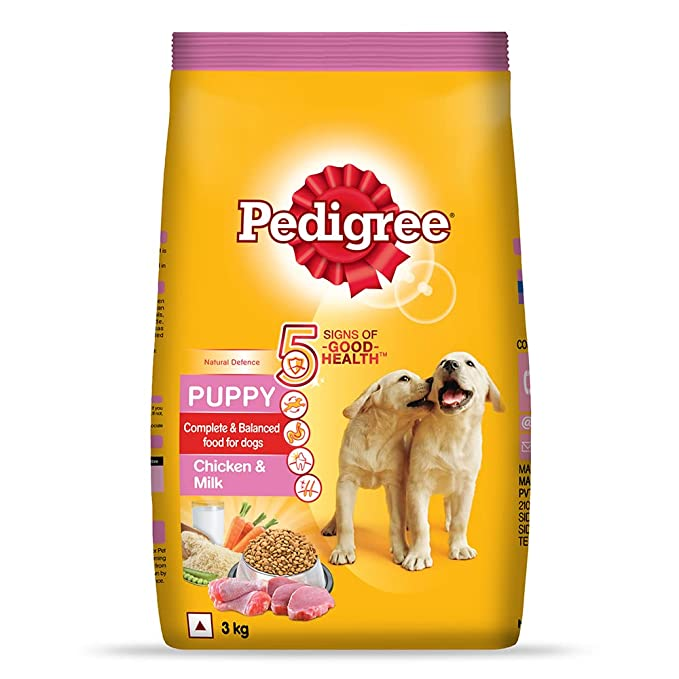

|
Dog Food Dog food is food specifically formulated and intended for consumption by dogs and other related canines. Dogs are considered to be omnivores with a carnivorous bias. They have the sharp, pointed teeth and shorter gastrointestinal tracts of carnivores, better suited for the consumption of meat than of vegetable substances, yet also have ten genes that are responsible for starch and glucose digestion, as well as the ability to produce amylase, an enzyme that functions to break down carbohydrates into simple sugars – something that obligate carnivores like cats lack. Dogs evolved the ability living alongside humans in agricultural societies, as they managed on scrap leftovers and excrement from humans. |
Dog Treat 
Treats are the key means in training your four-legged fellow to listen to commands and to behave nicely. When training dogs, it is essential to reward them for obedience and effort. An incentivising bite will give your pet positive emotions and also helps to learn commands more quickly. Choose those treats that are specially designed for training and that are easy to dos |
Dog Gromming 
Grooming is not just about maintaining your dog’s level of cleanliness or keeping your dog good-looking. It is about maintaining both your dog’s physical health as well as keeping up-to-date appearance. |
|
Health & Supplement 
Types of Supplements for Dogs: There are a wide array of supplements that can help support your dog’s health. Examples include Fortiflora for dogs to promote healthy digestion, dog dental chews to support teeth and gum health as well as vitamin E for dogs to support immune, skin and coat health. Brain, Heart, Gud, coat & Skin, Joint, Joint Health, Dental supplements
|
Dog Collars. 
Caring for a puppy is similar to caring for small children and it must not be taken lightly. You should make sure that you have following few dog accessories before becoming a proud owner of Puppy. |
Dog Toys 
A dog toy is a toy that is specifically for dogs to play with. Dog toys come in many varieties, including dog bones, puppy toys, balls, tug toys, training aids, squeaky toys, discs and frisbees, plush toys, and sticks. Dog toys serve different purposes. Puppies, for instance, need toys they can chew on when they are teething because their gums and jaws become very sore and chewing on things provides them relief. Playing with different toys also encourages exercise, which benefits the dogs' overall health, stimulates their minds, discourages problem behavior resulting from boredom and excess energy, and promotes dental health. |
Rishi Raj Enterprises- Distributors of Royal Canin Imported Dry Dog & Cat Food. Royal Canine's cat food's distinct formulas are a revolutionary nutritional approach based on the knowledge and understanding of your cat's specific needs and will help maintain its optimal health. Royal Canin Size Nutrition is a full line of Royal Canine Dog food's ultra-premium dog food, featuring ten different formulas tailored to the specific nutritional needs of dogs of different ages, sizes and physiologies. Specific formulas for small breeds (under 20 lbs.), medium breeds (20 to 55 lbs.), large breeds (56 to 100 lbs.) and giant breeds (over 100 lbs.). Each food contains the optimum mixture of proteins, fats, carbohydrates, vitamins and minerals specific to each breed size's nutritional requirements during a particular stage of life.
Rishi Raj Enterprises, Near CTI,ATI,NSTI Dasnagar Howrah -711105, India. Ph:91-8083129XXX. Email : regspxxxx@gmail.com